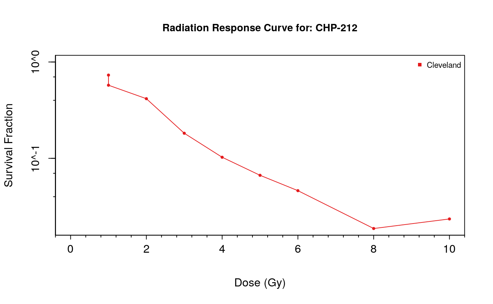

Biomarker Discovery from High Throughput Screening Datasets
Petr Smirnov
Princess Margaret Cancer Centrepsmirnov2000@gmail.com
Arvind Mer
Princess Margaret Cancer Centrearvind.mer@uhnresearch.ca
Christopher Eeles
Princess Margaret Cancer Centrechristopher.eeles@uhnresearch.ca Source:
vignettes/GxWorkshop.Rmd
GxWorkshop.RmdWorkshop Overview
Instructor(s) name(s) and contact information
- Petr Smirnov petr.smirnov@uhnresearch.ca
- Arvind Mer arvind.mer@uhnresearch.ca
- Christopher Eeles christopher.eeles@uhnresearch.ca
Workshop Description
This workshop will focus on the synergies between analysis results from the PharmacoGx, Xeva and RadioGx packages and their usefulness for discovery of biomarkers of drug and/or radiation sensitivity in cancer cell lines (CCLs) and patent derived xenograft models (PDXs). We will discuss issues with data curation, consistency and reproducibility within the literature as well as illustrate the importance of unified analytical platforms, data and code sharing in bioinformatics and biomedical research. In this lab learners will be led through an analysis for each of the three packages on data provided by the download functions within them. The results of these analyses will then be explored to highlight how drug and radiation dose-response profiles in CCLs and PDXs can be used to discover potential synergistic biomarkers for drug-radiation and drug combination therapies. The resulting biomarkers will be discussed in the context of translational cancer research and clinical applications of genomic data. We will conclude with a discussion of how these biomarkers can be used to inform future in vitro and in vivo treatment screenings and ultimately provide useful insights for clinical trial design.
Pre-requisites
List any workshop prerequisites:
- Basic knowledge of R syntax
- Knowledge of or interest in pharmacogenomics and radio-genomics
- Familiarity with base bioconductor objects, including the SummarizedExperiment Class
- Familiarity with linear modelling in R; ANOVA, and goodness of fit tests
List relevant background reading for the workshop, including any theoretical background you expect students to have.
- Smirnov, P. et al. PharmacoGx: An R package for analysis of large pharmacogenomic datasets. Bioinformatics 32, 1244–1246 (2016).
- Manem, V. SK. et al. Modeling Cellular Response in Large-Scale Radiogenomic Databases to Advance Precision Radiotherapy. Cancer Research (2019) doi:10.1158/0008-5472.CAN-19-0179.
- Mer, A. S. et al. Integrative pharmacogenomics analysis of patient-derived xenografts. Cancer Res canres.0349.2019 (2019) doi:10.1158/0008-5472.CAN-19-0349.
Workshop Participation
Participants expected to have the following required packages installed on their machines to be able to run the commands along with the instructors. PharmacoGx, Xeva, RadioGx, CoreGx and Biobase from Bioconductor The workshop will be presented as a set of analysis steps to be replicated by the learners, with instructors available to explain the why and how of applying these functions to the given datasets. Learners will write analysis scripts as well as use interactive commands to explore the generated data structures and results. Learners will then brainstorm potential applications of the analysis results in their field as well as comment on use case examples presented by the instructors on research in our lab.
R / Bioconductor packages used
Bioconductor:
- https://bioconductor.org/packages/release/bioc/html/PharmacoGx.html
- http://bioconductor.org/packages/release/bioc/html/Xeva.html
-
https://cran.r-project.org/web/packages/RadioGx/index.html
- RadioGx is currently available in the devel version of Bioconductor
-
https://cran.r-project.org/web/packages/CoreGx/index.html
- CoreGx is currently available in the 3.11 release of Bioconductor
Time outline
For a 2-hr workshop:
| Activity | Time |
|---|---|
| Introduction | 5m |
| Data Structure and Common Functions Between Packages | 10m |
| Basic functionalities of PharmacoGx | 10m |
| Basic functionalities of Xeva | 10m |
| Basic functionalities of RadioGx | 10m |
| Data Analysis Walkthrough | 30m |
| Understanding Analysis Results and Synergies | 10m |
| Use Case Discussion: Translational Science | 15m |
Workshop goals and objectives
Learning goals
- Describe pharmacogenomic datasets and radiogenomic datasets and usefulness in cancer research
- Learn how to extract information from these datasets and to intersect them over their common measured features, experiments, model systems
- Learn how to visualize experimental results from these datasets
- Learn how to model dose-response for both small compound and radiotherapy datasets
- Learn measures to quantify the response in both cell line and PDX sensitivity screens, for both drug and radiation treatments
- Understand the differences in experimental design between radiotherapy and small compound treatments in cell lines
- Understand the differences in measuring response to therapy between cell line and PDX based models
- Understand how to choose the appropriate sensitivity quantification metric for your task
- Understand how to identify potential genomic signatures of drug and radiation response and explore how synergies between these signatures can inform clinical trial design
Learning objectives
- List available standardized pharmacogenomic and radiogenomic datasets and download them
- Access the molecular features, dose-response and metadata contained within the data structures defined in the packages
- Create drug-dose and radiation-dose response plots for cell line experiments
- Create tumor growth curve plots for PDX experiments
- Fit linear-quadratic models to radiotherapy experiments in cell lines
- Fit Hill Slope models to dose-response experiments using small compound treatments in cell lines
- Calculate the AAC, AUC, IC50, SF2, D10 metrics for response quantification in cell lines
- Calculate the mRECIST, Slope, ABC, linear mix model and other tumour growth curve summary metrics
- Visualize response of PDX experiments using an Oncoprint heatmap
- Predict in vivo and in vitro univariate biomarkers using the PharmacoGx, Xeva and RadioGx packages
- Compare signatures of response between chemotherapy compounds and radiotherapy
- Compare univariate biomarkers between cell line and PDX experiments
Introduction
This tutorial, titled Biomarker Discovery from High Throughput Screening Datasets, focuses on a suite of packages designed to simplify analysis correlating measures of treatment response measured on model systems with molecular profiles of those systems. These packages primarly focus on modeling response to cancer treatments in cancer models, but the concepts presented can be applied to other disease types, given availability of data for the area of interest.
The first two of the packages, PharmacoGx and r BiocStyle::Biocpkg("RadioGx") focus on screens done using cell lines as a model system. PharmacoGx focuses on modeling and predicting the response of cell lines treated with small molecule therapies. RadioGx swaps the small molecule treatment for irradiation of cell lines. The third package, r BiocStyle::Biocpkg("Xeva"), looks at treatment response for in vivo systems, primarily Patient Derived Xenographs of cancer tumours growing in immune compromised mice.
Data Structure and Common Functions Between Packages
While the experiments analyzed by the three packages are different, the workflow that these packages accommodate has many similarities between them. First and foremost, all three packages were developed to provide data structures that package together screening and molecular data, as well as all related metadata, for complete studies. These packages also provide an interface to download large, publically available datasets which have standardized naming conventions, so that data across different studies is immediately comparable.
Furthermore, the analysis workflow shares common tasks across the three domains covered by these packages. This includes understanding and visualizing the data that is present in each dataset; modeling the response of the model systems to treatment; summarizing that response into a measure comparable across models; extracting and summarizing measurements of molecular features; and ultimately correlating the response of model systems to their molecular state.
In this tutorial, we will be highlighting each analysis step across all three packages, and then finish with a demonstration of how to integrate across the different domains presented here.
Experimental Designs
RadioGx and PharmacoGx are both used to analyze data from in vitro, cell based assays. In cancer, the most common in vitro model used is the cancer cell line. These cell lines are usually obtained from patient tumour biopsies, which are passaged in a dish and often treated with factors to immortalize the cells - that is, to grant them infinite proliferation capacity. Such models are often deposited in repositories such as the ATCC, and made available for purchase to researchers who wish to use them in their experiments.

Pharmacogenomics
In Pharmacogenomics, the design of the experiment usually involves doing two things in parallel: Each cell line in the study is profiled on a molecular level, which can include measuring DNA level aberations such as SNVs and copy number changes, RNA expression levels, DNA methylation, and protein expression. In parallel, the cell lines undergo a viability based drug screen, where cell lines are treated with a panel of drugs, over a range of concentrations, and the growth of each cell line is compared to an untreated control.
The variable response to drug treatement across different cell lines is then compared with the molecular states of the cells, using machine learning or statistical approaches to discern which molecular features are predictive of the observed drug response.

Radiogenomics
Radiogenomics follows a very similar design to Pharmacogenomics. The main difference is the form of the treatment applied to cells - in Pharmacogenomics, small molecule treatments are studied, while in radiogenomics, the treatement is irradiation of the cells. While the design of the study is similar, the difference in treatement causes differences in how the response of cells is modelled and quantified, as we detail below.
Currently, there is only one major, high-throughput dataset looking at in vitro radiogenomics, the Cleveland Clinic dataset. In this dataset, gamma radiation was used as the treatment. Conceptually however, there is no reason why alpha and beta radiation could not be studied in a similar experimental setup.

Xeva:


Downloading PharmacoSet objects
Let us download the PSets used for this tutorial into our local working environment. A table of available PharmacoSet objects can be obtained by using the availablePSets function.
library(PharmacoGx) availablePSets()
If you look through the table produced by availablePSets, you will notice that each PSet object is downloaded from Zenodo - an Open Science project supported by the European Commision and CERN. Each PSet is assigned a DOI, which can be used to uniquely identify the data used in your analysis and retrieve it in the future for research reproducibility.
Any of the PharmacoSets in the table can then be downloaded by calling downloadPSet, which saves the datasets into a directory of the users choice, and returns the data into the R session. Lets try downloading the GDSC and CCLE PSets. The following code is included as an example, but not run, as the objects were preloaded onto the VM for the workshop.
GDSC <- downloadPSet("GDSC_2020(v1-8.2)", saveDir=file.path(".", "PSets")) CCLE <- downloadPSet("CCLE_2015", saveDir=file.path(".", "PSets"))
To load the datasets used in this workshop, we run the following code:
Examining and Extracting data of interest
For most of your work with PSet objects, we recommend you use the accessor functions implemented in the package to access the data stored in the object. For example, here we can use the cellInfo function to pull out the tissue of origin for each cell line in the CCLE dataset. The tissueid column is standard for PSets, and should be present in all objects.
mycol <- c("#8dd3c7","#ffffb3","#bebada","#fb8072","#80b1d3","#fdb462", "#b3de69","#fccde5","#d9d9d9","#bc80bd","#ccebc5","#ffed6f", "#a6cee3","#1f78b4","#b2df8a","#33a02c","#fb9a99","#e31a1c", "#fdbf6f","#ff7f00","#cab2d6","#6a3d9a","#ffff99","#b15928") pie(table(CCLE@cell[,"tissueid"]), col=mycol, main="Tissue types", radius=1, cex=0.8)

Tissue of origin of cell lines in CCLE study
While we will introduce some of the functions for subsetting and extracting data from PSets in this tutorial, the documentation of the PharmacoSet object contains descriptions of the available functions to interface with PSet objects:
?`PharmacoSet-class`PSets can be subsetted by refering directly to the drugs and cell lines you want to keep in the dataset. For example, we can subset the GDSC PSet in the following ways:
print(GDSC)
## Name: GDSC_v1
## Date Created: Fri Jun 5 20:29:32 2020
## Number of cell lines: 1064
## RNA:
## Dim: 5947 789
## Drug pertubation:
## Please look at pertNumber(cSet) to determine number of experiments for each drug-cell combination.
## Drug sensitivity:
## Number of Experiments: 6890
## Please look at sensNumber(cSet) to determine number of experiments for each drug-cell combination.## [1] "Paclitaxel"## Name: GDSC_v1
## Date Created: Fri Jun 5 20:29:32 2020
## Number of cell lines: 824
## RNA:
## Dim: 5947 789
## Drug pertubation:
## Please look at pertNumber(cSet) to determine number of experiments for each drug-cell combination.
## Drug sensitivity:
## Number of Experiments: 511
## Please look at sensNumber(cSet) to determine number of experiments for each drug-cell combination.print(GDSC["YT","Erlotinib"])
## Name: GDSC_v1
## Date Created: Fri Jun 5 20:29:32 2020
## Number of cell lines: 1
## RNA:
## Dim: 5947 0
## Drug pertubation:
## Please look at pertNumber(cSet) to determine number of experiments for each drug-cell combination.
## Drug sensitivity:
## Number of Experiments: 1
## Please look at sensNumber(cSet) to determine number of experiments for each drug-cell combination.As an exercise, lets manually compute the number of overlaping cell lines and drugs between CCLE and GDSC. Try it yourself!
If you noticed as you completed the previous exercise, cell line and drug names are standardized between PSets downloaded using the downloadPSet function. This is the major benefit in working with the pre-curated objects: entities follow a standardized naming scheme, which was chosen to be human readable whenever possible.
PharmacoGx also implements a convenience function to intersect PSets:
common <- intersectPSet(list(CCLE, GDSC), intersectOn=c("drugs", "cell.lines")) print(common)
Plotting Drug Dose Response Data
Drug-Dose response data included in the PharmacoSet objects can be conviniently plotted using the drugDoseResponseCurve function. Given a list of PharmacoSets, a drug name and a cell name, it will plot the drug dose response curves for the given cell-drug combination in each dataset, allowing direct comparisons of data between datasets.
cells <- c("SK-MEL-2","697","NCI-H1666") par(mfrow=c(1, 3), pty = "s") drugDoseResponseCurve(drug="Lapatinib", cellline=cells[1], pSets=list(CCLE, GDSC), plot.type="Actual", legends.label="aac_published") drugDoseResponseCurve(drug="Lapatinib", cellline=cells[2], pSets=list(CCLE, GDSC), plot.type="Actual", legends.label="aac_published") drugDoseResponseCurve(drug="Lapatinib", cellline=cells[3], pSets=list(CCLE, GDSC), plot.type="Actual", legends.label="aac_published")
The function drugDoseResponseCurve can also be used to plot your own drug dose response curves, as follows:
concentrations <- 1/2^seq(0,8) * 1 viabilities <- c(0, 33.3, 60, 77.8, 88.2, 93.9, 96.9, 98.4, 99.2) drugDoseResponseCurve(concentrations = list("Exp 1" = concentrations), viabilities = list("Exp 1" = viabilities))
## Warning in sanitizeInput(concentrations[[i]], viabilities[[i]], conc_as_log =
## conc_as_log, : Concentration Values were unsorted. Sorting concentration and
## ordering viability in same order
Fitting Drug Dose Response Curves
One of the core tasks implemented in PharmacoGx is the fitting of Hill Curve Models to dose-response data. In PharmacoGx, we use the 3 Parameter Hill Curve function as our model of drug response in cancer cell lines:
\[y = E_\infty + \frac{1-E_\infty}{1 + (\frac{x}{EC50})^{HS}}\] This is a log-logistic model, meaning that it takes the form of a logistic curve when x is on the log scale. The three parameters are: \(E_infty\), which is the maximal inhibition predicted at infinite concetration of the drug (the right asymptote); \(EC50\), which is the inflection point of the logit, where the inhibition reaches 50% of the maximum; \(HS\), the Hill Slope, which is a measure of the cooperativity of binding. This parameter controls the steepness of the logit, and is interpreted based on its relation to 1. Values larger than 1 imply positive cooperativity in inhibition/binding of the target for the small molcule ligands, which values less than 1 imply negative cooperativity/ antagonism.
To fit a Hill Slope model to your data in PharmacoGx, you can use the logLogisticRegression function, as below:
concentrations <- 1/2^seq(0,8) * 1 viabilities <- c(0, 33.3, 60, 77.8, 88.2, 93.9, 96.9, 98.4, 99.2) pars <- logLogisticRegression(conc = concentrations, viability = viabilities)
## Warning in sanitizeInput(conc = conc, viability = viability, conc_as_log =
## conc_as_log, : Concentration Values were unsorted. Sorting concentration and
## ordering viability in same orderprint(pars)
## $HS
## [1] 1.900066
##
## $E_inf
## [1] 0
##
## $EC50
## [1] 0.2813364Computing Summary Measures for DDRCs
Often with in vitro Pharmacogenomics data, we want to compare the drug sensitivity of a cell line to some omic feature. For this, we want to summarize the drug dose response curve into a single number representing the sensitivity of the cell line. The IC50 and Area Above the curve are two convenient metrics for quantifying the observed drug sensitivity. If you noticed above, the drugDoseResponseCurve function computes them by default. In PharmacoGx, they can be computed manually as follows:
concentrations <- rev(1/2^seq(0,8) * 1) viabilities <- c(99.2, 98.4, 96.9, 93.9, 88.2, 77.8, 60, 33.3, 0) print(PharmacoGx::computeAUC(concentration = concentrations, viability = viabilities))
## [1] 23.68416print(PharmacoGx::computeIC50(concentration = concentrations, viability = viabilities))
## [1] 0.2813364In PharmacoGx, we call these measures sensitivity measures. PSets come with these measures precomputed, and accessible using the sensitivityProfiles function:
head(sensitivityProfiles(CCLE))
## ic50_published aac_published amax_published
## drugid_AEW541_1321N1 8.000000 0.0873750 -42.55801
## drugid_AEW541_22Rv1 2.329924 0.2205000 -71.58934
## drugid_AEW541_42-MG-BA 2.682130 0.1144375 -63.49137
## drugid_AEW541_5637 5.002314 0.1243550 -62.35278
## drugid_AEW541_639-V 1.736181 0.1936250 -51.95981
## drugid_AEW541_697 4.260822 0.1087625 -73.33379
## aac_recomputed ic50_recomputed HS E_inf
## drugid_AEW541_1321N1 0.09800818 16.332263 0.9169196 38.47711
## drugid_AEW541_22Rv1 0.21323823 2.034710 0.8374151 13.95620
## drugid_AEW541_42-MG-BA 0.12151155 2.687672 2.9099240 36.28378
## drugid_AEW541_5637 0.10877695 5.192732 1.0883419 0.00000
## drugid_AEW541_639-V 0.18344576 5.113119 0.6991911 30.29307
## drugid_AEW541_697 0.10518547 4.254253 1.5039911 0.00000
## EC50
## drugid_AEW541_1321N1 3.295213
## drugid_AEW541_22Rv1 1.376470
## drugid_AEW541_42-MG-BA 1.723197
## drugid_AEW541_5637 5.192732
## drugid_AEW541_639-V 1.350123
## drugid_AEW541_697 4.254253Summary Functions
Pharmacogenomics studies often contain many examples of either replicated or missing data. One of the most common tasks in preparing data for statistical or machine learning analysis is aligning your features and labels. To accelerate using Pharmacogenomics data for analysis, PharmacoGx contains two functions which create deduplicated matrices with missing data filled by NAs: summarizeSensitivityProfiles and summarizeMolecularProfiles. They create matrices which are drugs x cell lines and molecular features x cell lines, with any cell lines profiled for only sensitivity or molecular features padded with NA values. For the molecular profiles, the data is returned in a r BiocStyle::Biocpkg("Biobase") ExpressionSet object, while drug sensitivity data is returned as a matrix.
dim(PharmacoGx::summarizeMolecularProfiles(CCLE, "rna"))
## Summarizing rna molecular data for: CCLE##
|
| | 0%
|
|=================================== | 50%
|
|======================================================================| 100%## [1] 10012 1094dim(PharmacoGx::summarizeSensitivityProfiles(CCLE, "aac_recomputed"))
## [1] 24 1094Below, we use the summarizeSensitivityProfiles function and ggplot to investigate the distributions of AUC values within CCLE.
library(ggplot2, verbose=FALSE)
## Warning: package 'ggplot2' was built under R version 4.0.1library(reshape2, verbose=FALSE) CCLE.aac <- PharmacoGx::summarizeSensitivityProfiles(CCLE, sensitivity.measure = "aac_recomputed") melted_data <- melt(CCLE.aac) NA_rows <- unique(which(is.na(melted_data), arr.ind=T)[,1]) melted_data <- melted_data[-NA_rows,] p <- ggplot(melted_data, aes(x=Var1,y=value)) + geom_boxplot(fill="gray") + theme(axis.text.x=element_text(angle=90,hjust=1)) + xlab("Drugs") + ylab("AAC") print(p)

Cells response to drugs in CCLE
Signature Generation
Finally, we will talk about some functions built into PharmacoGx to generate signatures of molecular features which correlate with response to particular compounds. In PharmacoGx, the main function to generate signatures of response across drugs is drugSensitivitySig. It takes as input a PSet, and the molecular data type you wish to use to generate the signatures, and computes the linear association between each feature and each drug response vector independently. The default of using all features, drugs and cell lines in the dataset can be modified with parameters detailed below.
At its core, drugSensitivitySig fits a nested linear model to the drug response data, using the molecular feature, as well as cell tissue of origin and batch effect as possible predictors. The function then uses ANOVA to judge whether including the molecular feature in the model leads to a statistically significant improvement in prediction accuracy (R^2). For more details on the implementation, we encourage readers to reference the PharmacoGx manuscript, or the vignettes included in the package.
Here, as an example, we will run drugSensitivitySig to generate a signature of response to Lapatinib and Erlotinib, two targetted therapies, from the GDSC data. We will do this with the first (largely random) 100 genes measured in the expression matrix, as the full computation can take some time to complete.
## Extracting the first 100 gene names. featureInfo brings up the rowData of the "rna" SummarizedExperiment chosen.genes <- rownames(featureInfo(GDSC, "rna"))[100] sigs <- drugSensitivitySig(GDSC, "rna", sensitivity.measure = "aac_recomputed", drugs=c("Erlotinib", "Lapatinib"), features = chosen.genes)
## Summarizing rna molecular data for: GDSC_v1##
|
| | 0%
|
|= | 2%
|
|== | 3%
|
|=== | 5%
|
|===== | 7%
|
|====== | 8%
|
|======= | 10%
|
|======== | 11%
|
|========= | 13%
|
|========== | 15%
|
|=========== | 16%
|
|============= | 18%
|
|============== | 20%
|
|=============== | 21%
|
|================ | 23%
|
|================= | 25%
|
|================== | 26%
|
|==================== | 28%
|
|===================== | 30%
|
|====================== | 31%
|
|======================= | 33%
|
|======================== | 34%
|
|========================= | 36%
|
|========================== | 38%
|
|============================ | 39%
|
|============================= | 41%
|
|============================== | 43%
|
|=============================== | 44%
|
|================================ | 46%
|
|================================= | 48%
|
|================================== | 49%
|
|==================================== | 51%
|
|===================================== | 52%
|
|====================================== | 54%
|
|======================================= | 56%
|
|======================================== | 57%
|
|========================================= | 59%
|
|========================================== | 61%
|
|============================================ | 62%
|
|============================================= | 64%
|
|============================================== | 66%
|
|=============================================== | 67%
|
|================================================ | 69%
|
|================================================= | 70%
|
|================================================== | 72%
|
|==================================================== | 74%
|
|===================================================== | 75%
|
|====================================================== | 77%
|
|======================================================= | 79%
|
|======================================================== | 80%
|
|========================================================= | 82%
|
|=========================================================== | 84%
|
|============================================================ | 85%
|
|============================================================= | 87%
|
|============================================================== | 89%
|
|=============================================================== | 90%
|
|================================================================ | 92%
|
|================================================================= | 93%
|
|=================================================================== | 95%
|
|==================================================================== | 97%
|
|===================================================================== | 98%
|
|======================================================================| 100%## Computing drug sensitivity signatures...Basic Functionalities of RadioGx
Installing RadioGx
To install the RadioGx package, run:
devtools::install_github('bhklab/RadioGx') # BiocManager::install('RadioGx', version='devel') # Waiting on issue with Bioconductor credentials to be resolved so I can push updates
library(RadioGx)
RadioSet
The RadioSet has a structure similar to the PharmacoSet and also inherits from the CoreSet1 class . The radiation slot is implemented in RadioGx to hold relevant metadata about the type(s) of radiation used in the dose-response experiment, and is analogous to the drug slot in a PharmacoSet. The remainder of the slots mirror the PharmacoSet.

RadioSet class diagram. Objects comprising a RadioSet are enclosed in boxes. First box indicates type and name of each object. Second box indicates the structure of an object or class. Third box shows accessor methods from RadioGx for that specific object. ‘=>’ represents return and specifies what is returned from that item or method.
Downloading an RSet
RadioGx provides an interface similar to PharmacoGx and Xeva for downloading our curated versions of published datasets.
To get a list of available RadioSets, use:
RSets <- availableRSets()
| RadioSet_name | Date_updated | DOI |
|---|---|---|
| Cleveland | 2020/06/16 | 10.5281/zenodo.3899555 |
As the RadioGx package was only recently released, there is currently only one dataset available. Let’s download the ‘Cleveland’ RSet, which contains a highly curated version of the data from Yang et al., 2016.
Cleveland <- downloadRSet('Cleveland', saveDir='.')
Cleveland## Name: Cleveland
## Date Created: Wed Oct 25 17:38:42 2017
## Number of cell lines: 540
## Number of radiation types: 1
## RNA:
## Dim: 20049 517
## RNASeq:
## Dim: 61958 513
## CNV:
## Dim: 24960 403
## Drug pertubation:
## Please look at pertNumber(rSet) to determine number of
## experiments for each radiation-cell combination.
## Drug sensitivity:
## Number of Experiments: 542
## Please look at sensNumber(rSet) to determine number of
## experiments for each radiation-cell combination.Similar to PharmacoGx and Xeva, a summary of the contents of the RadioSet is printed when calling a RadioSet in the console. We can see that the Cleveland RSet contains sensitivity information for 540 cell-lines treated with a single type of radiation. The RSet also contains rna2, rna-seq and cnv molecular data for a subset of available cell-lines.
Accessing Data
RadioGx stores three major categories of data: metadata/annotations, molecular data and radiation response data. These are demarcated in Fig. @ref(fig:radioset) using green, blue and red, respectively. Accessor methods are available to retrieve all three kinds of data from an RSet; the accessor methods for each component are listed in the bottom most cell of each object in the RadioGx class diagram. We will discuss a subset of these methods now.
Accessing metadata
Metadata in an RSet is stored in the same slots as in a PharmacoSet, and can be accessed using the same generic accessor functions as in PharmacoGx. A unique slot, radiation has additional accessor methods to retrieve the radiation types used in a given sensitivity experiment.
# Get the radiation info data.frame from an RSet radInf <- radiationInfo(Cleveland)
knitr::kable(radInf)
| X.radiation. | |
|---|---|
| radiation | radiation |
Currently, only one type of radiation has been used in an RSet. However, we hope to add new RSets covering a wider range of radiation sensitivity and perturbation experiments in the near future. The following method is also available to retrieve the radiation types as a character vector instead of a data.frame.
radTypes <- radiationTypes(Cleveland) radTypes
## [1] "radiation"Accessing molecular data
Molecular data in an RSet is contained in the molecularProfiles slot and can be accessed the same way it is for a PSet.
# Get the list (equivalent to @molecularProfiles, except that it is robust to changes in RSet structure str(molecularProfilesSlot(Cleveland), max.level=2)
## List of 4
## $ rna :Formal class 'SummarizedExperiment' [package "SummarizedExperiment"] with 5 slots
## $ rnaseq :Formal class 'SummarizedExperiment' [package "SummarizedExperiment"] with 5 slots
## $ mutation:Formal class 'SummarizedExperiment' [package "SummarizedExperiment"] with 5 slots
## $ cnv :Formal class 'SummarizedExperiment' [package "SummarizedExperiment"] with 5 slots# Get the names from the list mDataNames(Cleveland)
## [1] "rna" "rnaseq" "mutation" "cnv"All molecular data in an RSet (any class inheriting from CoreSet, actually) is contained in a SummarizedExperiment object. While SummarizedExperiment comes with it’s own set of accessors, we recommend using available RadioGx accessor methods as it allows your scripts to be robust to future changes in the structure of a RadioSet object.
# Get sample metadata phenoInf <- phenoInfo(Cleveland, 'cnv')
To keep the document formatted nicely, the following tables have been subset to the first three rows and columns.
| Sample_title | Sample_geo_accession | Sample_status |
|---|---|---|
| A2780 | GSM887918 | Public on Mar 20 2012 |
| OVCAR-4 | GSM888565 | Public on Mar 20 2012 |
| L3.3 | GSM888333 | Public on Mar 20 2012 |
# Get feature metadata featInfo <- featureInfo(Cleveland, 'rna')
| Probe | EnsemblGeneId | EntrezGeneId |
|---|---|---|
| ENSG00000000003_at | ENSG00000000003 | 7105 |
| ENSG00000000005_at | ENSG00000000005 | 64102 |
| ENSG00000000419_at | ENSG00000000419 | 8813 |
# Access the moleclar feature data mProf <- molecularProfiles(Cleveland, 'rnaseq')
| G20461.HSC-3.2 | G20463.C2BBe1.2 | G20466.5637.2 | |
|---|---|---|---|
| ENSG00000000003 | 4.527 | 5.860 | 5.394 |
| ENSG00000000005 | 0.000 | 0.070 | 0.000 |
| ENSG00000000419 | 6.314 | 7.303 | 6.140 |
Accessing response data
Data from radiation sensitivity and/or perturbation experiments is also retrieved the same way it is for a PSet. Currently, only sensitivity experiments have been included in a RadioSet.
# Get sensitivity slot sens <- sensitivitySlot(Cleveland)
# Get sensitivity raw data sensRaw <- sensitivityRaw(Cleveland)
# Get sensitivity profiles sensProf <- sensitivityProfiles(Cleveland)
``{r } # Get sensitivity info sensInfo <- sensitivityInfo(Cleveland)
## Fitting Linear Quadratic (LQ) Models
RadioGx provides a number of functions for analyzing dose response experiments.
To use these functions, we must first fit a statistical model to the dose
response data. This package exports a function for fitting linear-quadratic
models to dose response data. The function can be used with data contained in
a RadioSet or with raw dose-response data.
```r
# Extract raw sensitvity data from the RadioSet
sensRaw <- sensitivityRaw(Cleveland)str(sensRaw)
## num [1:542, 1:9, 1:2] 1 1 1 1 1 1 1 1 1 1 ...
## - attr(*, "dimnames")=List of 3
## ..$ : chr [1:542] "SK-N-FI_radiation_1" "IMR-32_radiation_2" "SK-N-AS_radiation_3" "CHP-212_radiation_4" ...
## ..$ : chr [1:9] "doses1" "doses2" "doses3" "doses4" ...
## ..$ : chr [1:2] "Dose" "Viability"The data returned by sensitivityRaw(RSet) is a three dimensional array, but it can also be thought of as a set of experiment by treatment matrices. We can see by the dimnames of the third dimensions that the first matrix holds the radiation dose (in Gy) for each experiment, while the second matrix holds the viability measurements for the cell-line after each dose in the experimental series.
# Find a cancer cell-line of interest head(sensitivityInfo(Cleveland)$cellid)
## [1] "SK-N-FI" "IMR-32" "SK-N-AS" "CHP-212" "KP-N-S19s" "MHH-NB-11"cancerCellLine <- sensitivityInfo(Cleveland)$cellid[1] print(cancerCellLine)
## [1] "SK-N-FI"# Get the radiation doses and associated survival data from clevelandSmall radiationDoses <- sensRaw[1, , 'Dose'] survivalFractions <- sensRaw[1, , 'Viability']
LQmodel <- linearQuadraticModel(D=radiationDoses, SF=survivalFractions) LQmodel
## alpha beta
## 0.15219719 0.01783452
## attr(,"Rsquare")
## [1] 0.9882769Above we see that LQmodel contains the alpha and beta coefficients for the dose response curve fit to the dose and viability data for the IMR-32 cancer cell-line. Based on the \(R^2\) attribute we can see that the model fit for this data is good, with 98.8% of observed variance explained by the model.
Calculating Dose-Response Metrics
RadioGx provides a number of functions for calculating common dose response metrics such as surviving fraction (SF), area under the curve (AUC) and dose at which only 10% of cancer cells survive (D10).
Some of these functions require the alpha and beta coefficients, as calculated above using the linearQuadraticModel function.
survFracAfter2Units <- computeSF2(pars=LQmodel) print(survFracAfter2Units)
## [1] 0.6867861dose10PercentSurv <- computeD10(pars=LQmodel) print(dose10PercentSurv)
## [1] 7.870413We see from the above code cell that after two units of radiation, 68.679% of cancer cells remain relative to the initial population. Conversely, using computeD10 we see that on average 7.87 units of radiation need to be administered to result in 10% cell-line survival (i.e., 90% of cancer cells are killed).
Other dose-response metrics can be computed directly using radiation dose and cancer cell viability data.
areaUnderDoseRespCurve <- computeAUC(D=radiationDoses, pars=LQmodel, lower=0, upper=1) print(areaUnderDoseRespCurve)
## [1] 2.872288In the above code block we compute the AUC for a dose-response curve between a dose of 0 to 1 Gy. This area can be interpreted as the total proportion of cells killed during the administration of 1 Gy of radiation.
Dose-Response Curves
The doseResponseCurve function can be used to generate plots of surviving fraction vs dose for radiation sensitivity experiments. In this example we provide raw data values to create the plot. When the plot.type is set to “Both”, a linear-quadratic model will also be fit to the supplied dose-response values.
doseResponseCurve( Ds=list("Experiment 1" = c(0, 2, 4, 6)), SFs=list("Experiment 1" = c(1,.6,.4,.2)), plot.type="Both" )

Additionally, doseResponseCurve can be used to create dose response curves directly from a curated RadioSet object. When utilizing this feature, a cell-line must be selected from the RadioSet. This can be done by name if you know which cell-line you are looking for. If you don’t know which cell-line you want to visualize, the available cell-lines can be explored using the cellInfo function.
doseResponseCurve( rSets=list(clevelandSmall), cellline=cellInfo(clevelandSmall)$cellid[3] )

Summarizing Sensitivity
To retrieve a radiation type by cell-line summary of a sensitivity experiment, we use the summarizeSensitivityProfiles function. This will return a matrix where rows are radiation type3, columns are cell-line and values are viability measurements summarized using summary.stat4. The sensitivity measure to summarize can be specified using sensitivity.measure5.
sensSummary <- summarizeSensitivityProfiles(Cleveland)
sensSummary[, 1:3]
## SK-N-FI IMR-32 SK-N-AS
## 2.8616423 0.5490508 3.2589305Summarizing Molecular Data
mprofSummary <- RadioGx::summarizeMolecularProfiles(Cleveland, mDataType='rna', summary.stat='median', fill.missing=FALSE)
mprofSummary## class: SummarizedExperiment
## dim: 20049 517
## metadata(3): experimentData annotation protocolData
## assays(2): exprs se.exprs
## rownames(20049): ENSG00000000003 ENSG00000000005 ... ENSG00000280439
## ENSG00000280448
## rowData names(7): Probe EnsemblGeneId ... BEST rownames
## colnames(517): SK-N-FI IMR-32 ... Ishikawa (Heraklio) 02 ER- T.T
## colData names(25): samplename filename ... rownames tissueidDue to a lack of replicates in the Cleveland RSet, the returned SummarizedExperiment object contains the same information as the original. For other experiments with replicates, however, the result should contain one column per unique cell-line id. For ease of interoperability with the response data contained in an RSet, if fill.missing is FALSE empty columns for the cell-lines in the sensitivity experiment, but not in the molecular profile will be added to the SummarizedExperiment such that the dimensions are equal.
Molecular Signatures for Biomarker Discovery
The true usefulness of the RadioGx packages comes from the ability to determine gene signatures for a cell-lines from a sensitivity experiment. Cell-lines of interest to a given researcher can be selected and a molecular signature computed which correlates specific molecular features with a given sensitivity profile. Using this method one could identify signatures associated with either radio-sensitivity or radio-resistance. Combining this signature with drug response gene signatures from PharmacoGx, as will be done in the subsequent section, one can identify drugs which could augment the effectiveness of a given radiation signature. Perhaps more powerfully, drugs which target features associated with radio-resistance can be found, potentially synergistically increasing the overall effectiveness of the combine treatment.
radSensSig <- radSensitivitySig(Cleveland, mDataType='rna', features=fNames(Cleveland, 'rna')[2:5], nthread=15)
## Computing radiation sensitivity signatures...radSensSig@.Data
## , , estimate
##
## radiation
## ENSG00000000005 NA
## ENSG00000000419 NA
## ENSG00000000457 NA
## ENSG00000000460 NA
##
## , , se
##
## radiation
## ENSG00000000005 NA
## ENSG00000000419 NA
## ENSG00000000457 NA
## ENSG00000000460 NA
##
## , , n
##
## radiation
## ENSG00000000005 NA
## ENSG00000000419 NA
## ENSG00000000457 NA
## ENSG00000000460 NA
##
## , , tstat
##
## radiation
## ENSG00000000005 NA
## ENSG00000000419 NA
## ENSG00000000457 NA
## ENSG00000000460 NA
##
## , , fstat
##
## radiation
## ENSG00000000005 NA
## ENSG00000000419 NA
## ENSG00000000457 NA
## ENSG00000000460 NA
##
## , , pvalue
##
## radiation
## ENSG00000000005 NA
## ENSG00000000419 NA
## ENSG00000000457 NA
## ENSG00000000460 NA
##
## , , df
##
## radiation
## ENSG00000000005 NA
## ENSG00000000419 NA
## ENSG00000000457 NA
## ENSG00000000460 NA
##
## , , fdr
##
## radiation
## ENSG00000000005 NA
## ENSG00000000419 NA
## ENSG00000000457 NA
## ENSG00000000460 NA